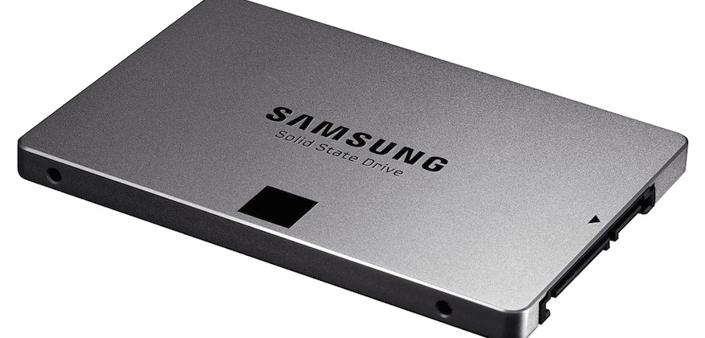

6º passo: Armazenamento
Para preservar com segurança todas as suas preciosas informações, opte por um dispositivo de armazenamento que se ajuste perfeitamente às suas necessidades. Você tem à sua disposição escolhas como o tradicional HD, a eficiência do SSD ou a modernidade do M.2. Selecione com cuidado, garantindo que sua escolha reflita sua usabilidade e preferências.
